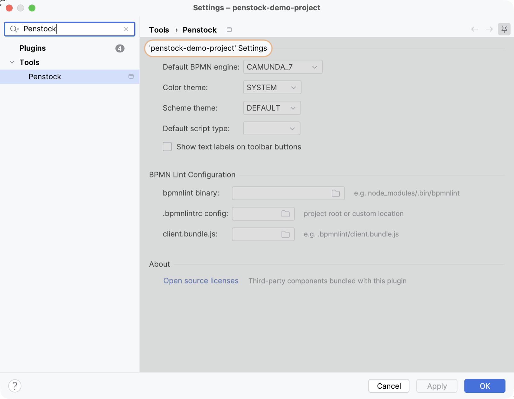

Configuration
One file in the project root, penstock.yaml, decides how Penstock behaves for that project: the engine, the theme, lint, element templates, auto-layout spacing and where deploy sends the diagram. It is hand-written, it is committed with the diagrams, and a file in a subfolder overrides it for everything underneath.
penstock.yaml
Create it yourself, or open Settings | Tools | Penstock and click Move this project's settings into penstock.yaml to have the current settings written out for you. penstock.yml and penstock.json are read the same way; JSON is valid YAML, so one parser handles both.
# yaml-language-server: $schema=https://kern0x1b.github.io/penstock-release/schema/penstock.schema.json
engine: camunda-7 # classic | camunda-7 | camunda-8
theme: system # system | light | dark | dracula
schema: default # default | sketchy
scriptType: groovy # none | groovy | javascript
toolbar:
labels: false
toolWindow:
tree: true
elementTemplates:
- .camunda/element-templates
lint:
binaryPath: node_modules/.bin/bpmnlint
configPath: .bpmnlintrc
clientBundlePath: .bpmnlint/client.bundle.js
layout:
nodesep: 40
ranksep: 80
marginX: 40
marginY: 40
# Passwords and secrets stay in the IDE password safe, never here.
deployment:
camunda7Url: http://localhost:8080/engine-rest
name: Order handling
source: penstock
auth:
type: basic
username: demoThe first line is what gives you completion, validation and hover documentation while you type: the IDE reads the schema from that URL and treats the file the way it treats a pom.xml. Every key is optional — what you leave out keeps its default.
Overriding per folder
Penstock reads every penstock.yaml from the project root down to the folder holding the diagram, and merges them in that order, so the file nearest the diagram wins. Keys you do not mention are inherited rather than reset.
penstock.yaml engine: camunda-8, theme: system
orders/
penstock.yaml engine: camunda-7
order-handling.bpmn -> camunda-7, theme: system
archive/
legacy.bpmn -> camunda-8, theme: systemMaps are merged key by key, so a subfolder can set lint.configPath without
restating the other two paths. Lists replace: an elementTemplates list in a
subfolder is used instead of the one above it, not appended to it.
What each key does
| engine | classic, camunda-7 or camunda-8. Decides the palette, the properties panel, whether the script type applies and what deploy talks to. |
| theme | system follows the IDE and switches with it. light, dark and dracula are fixed. |
| schema | default for standard BPMN 2.0 rendering, sketchy for the hand-drawn style. |
| scriptType | Default language for script tasks: none, groovy or javascript. Camunda 7 only. |
| toolbar.labels | Text under every toolbar button. Off by default. |
| toolWindow.tree | Whether the Penstock tool window shows the diagram tree. |
| elementTemplates | Files and folders to read Camunda element templates from. A folder is scanned for .json files. |
| lint.* | The three bpmnlint paths. All three are needed before linting runs; leave the section out to turn linting off. |
| layout.* | Auto-layout spacing in pixels: nodesep between shapes in a column, ranksep between columns, marginX and marginY inside a container. |
| deployment.* | Engine URLs, deployment name, tenant, source, duplicate filtering, changed-only, and the non-secret half of authentication. |
Secrets
Passwords, bearer tokens, client secrets and API keys are never read from this file and never written to it. They go to the IDE password safe, keyed per project, and only when you ask for them to be remembered. A user name or a client id is not a secret and can live in the file; what unlocks them cannot.
When there is no file

A project with no penstock.yaml falls back to Settings | Tools | Penstock, which writes .idea/bpmn-project.xml the way it always did. Once a file exists, the keys it sets are shown on that page as read-only — the file is the answer, and two places claiming to decide the same thing is how projects end up disagreeing with themselves.
A project that has never chosen an engine shows a Configure BPMN Engine screen the first time you open a diagram. What you pick there is saved the same way, and you can move it into the file afterwards.
What belongs in version control
| penstock.yaml | Commit it. That is the point: everyone on the project gets the same engine, the same lint setup and the same layout spacing, and a change to any of it is reviewed like any other change. |
| .bpmnlayoutrc | Still read for auto-layout spacing if you have one, and still fine to commit. layout in penstock.yaml replaces it and wins. |
| .idea/bpmn-project.xml | Your call, and needed only for what the file does not set. It carries no secrets. |
| Credentials | Nothing to commit. They live in the IDE password safe, outside the project. |
| .bpmn and .bpmn20.xml | Commit them. They are the process definitions, and reviewing them alongside code is the point. |